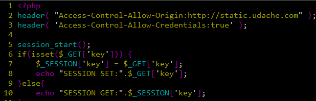
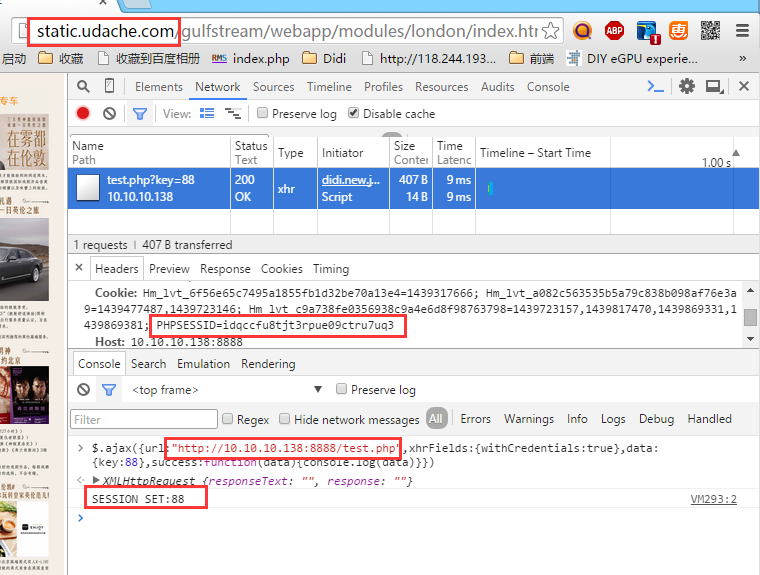
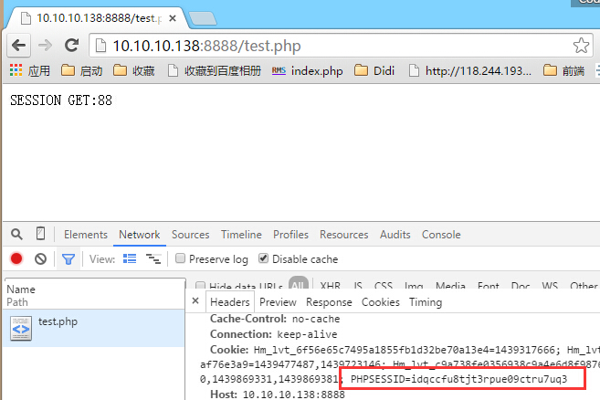

Cookie使用需谨慎，保持短小精悍
4k Bytes
document.cookie，返回当前域名（包括父级域名）的cookie串。
cookie串由'; '分隔每个cookie，每个cookie按name=value的方式保存。如下格式：
name1=value1; name2=value2; name3=value3 示例代码：
var cookie = document.cookie;
output:
name=test; name1=test1; name2=test2 读取时，只有name=<value>部分，不会包含其他cookie属性字段。每个cookie以'; '分隔。
通常为4个属性，格式如下：
name=<value>[; expires=<date>][; domain=<domain>][; path=<path>][; secure] 带有第五个属性HttpOnly的cookie，可以有效防止XSS攻击，阻止浏览器将cookie信息传送给第三方。
name=<value>[; expires=<date>][; domain=<domain>][; path=<path>][; secure][; HttpOnly] domain，默认为location.hostname，而不是location.hostpath，默认为当前路径，比如当前为/static/abc/d.html，则path为/static/abc。路径不存在，cookie设置不成功expires，默认为当前session有效示例代码：
document.cookie = 'name=test; expires=' + date.toGMTString()
+ '; domain=' + domain
+ '; path=' + path
+ '; secure'
; 子路径能获取父路径下的cookie，比如/static/abc下，能获取path为/static的cookie。反之则不行
同父路径类似，子域名能获取父域名下的cookie，反之则不行
Headers：
Access-Control-Allow-Origin: http://static.udache.com
Access-Control-Allow-Credentials: true 如下截图：
  